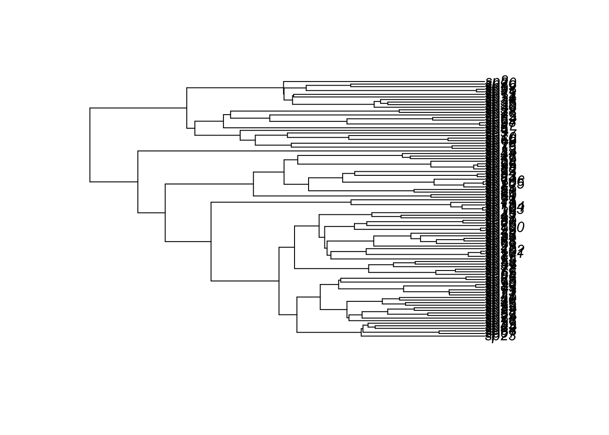

2 Validation of HiClaSSE
Here, we validate HiClaSSE against available models from diversitree package.
##~~~~~~~~~~~~~~~~~~~~~~~~~~~~~~~~~~~~~~~
## ~ installations and dependencies ----
##~~~~~~~~~~~~~~~~~~~~~~~~~~~~~~~~~~~~~~~
# source dependencies and install them if they are not
source('R/utils/dependencies.R')
#source('R-models/my-ClaSSE.R') # pure R implementation of HiCLaSSE
source('R/hiclasse/HiClaSSE-R.R') # pure R implementation of HiCLaSSE## [1] "Original matrix:"
## [,1] [,2] [,3]
## [1,] 1 4 7
## [2,] 2 5 8
## [3,] 3 6 9
## [1] "Matrix with right diagonal set to zero:"
## [,1] [,2] [,3]
## [1,] 1 4 0
## [2,] 2 0 8
## [3,] 0 6 9## [1] "Original matrix:"
## [,1] [,2] [,3]
## [1,] 1 4 7
## [2,] 2 5 8
## [3,] 3 6 9
## [1] "Matrix with right diagonal set to zero:"
## [,1] [,2] [,3]
## [1,] 1 4 0
## [2,] 2 0 8
## [3,] 0 6 9
## [1] TRUE
## [1] TRUE
## [1] TRUE
## [1] TRUE2.0.1 Make data
set.seed(123)
# BiSSE
pars <- c(1.5, 0.5, .1, .1, 1.2, 1)
names(pars) <- diversitree:::default.argnames.bisse()
#pars
phy <- tree.bisse(pars, max.taxa=100, x0=0)
tree <- phy
states <- phy$tip.state
#states
plot(tree)
2.1 BiSSE-ness and HiClaSSE
2.1.1 BiSSE-ness Likelihood
## BiSSEness:
lambda0 = 1.2
p0c = 0.7
p0a = 0.1
lambda1 = 2
p1c = 0.6
p1a = 0.4
# lambda0, lambda1, mu0, mu1, q01, q10, p0c, p0a, p1c, p1a
pars.bi <-c(lambda0, lambda1, 0.03, 0.04, .5, .6, p0c, p0a, p1c, p1a)
#pars.bi
lik.bisseness <- make.bisseness(tree, states)
bisseness <- lik.bisseness(pars.bi, intermediates=F, root=ROOT.GIVEN, root.p=c(.5, .5))
#bisseness2.1.2 HiClaSSE2 Likelihood
Make model
Args <- list(
Nstates = 2L,
y = list(
c(0,0, 1,0),
c(0,0, 0,1)
))
newArgs <- makeArgs(Args)
#printArgsGlobal()
args <- argnames_HiClaSSE(2)
#args$parsParameter mapping
lam000 = lambda0 * (1-p0c)
lam001 = lambda0 * p0c*p0a
lam011 = lambda0 * p0c*(1-p0a)
lam100 = lambda1 * p1c*(1-p1a)
lam101 = lambda1 * p1c*p1a
lam111 = lambda1 * (1-p1c)
pars.hi <- c(lam000,lam001,lam011, lam100,lam101,lam111, 0.03, 0.04, .5, .6)
names(pars.hi) <- args$pars
print(pars.hi)## lam000 lam001 lam011 lam100 lam101 lam111 mu0 mu1 q01 q10
## 0.360 0.084 0.756 0.720 0.480 0.800 0.030 0.040 0.500 0.600Inference
lik.hiclasse <- make.HiClasse_cpp(tree, states, sampling.f=NULL, strict=TRUE, control=list(backend = "gslode"), newArgs)## [1] "Recoding: 0010 -> 0010"
## [1] "Recoding: 0001 -> 0001"2.2 BiSSE and HiClaSSE
2.2.1 BiSSE
## BiSSEness:
lambda0 = 1.2
lambda1 = 2
# lambda0, lambda1, mu0, mu1, q01, q10
pars.bi <-c(lambda0, lambda1, 0.03, 0.04, .5, .6)
#pars.bi
lik.bisse <- make.bisse(tree, states)
bisse <- lik.bisse(pars.bi, intermediates=F, root=ROOT.GIVEN, root.p=c(.5, .5))
bisse## [1] -150.3882.2.2 HiClaSSE2
Make model
Args <- list(
Nstates = 2L,
y = list(
c(0,0, 1,0),
c(0,0, 0,1)
))
newArgs <- makeArgs(Args)
#printArgsGlobal()
args <- argnames_HiClaSSE(2)
lam000 = lambda0
lam001 = 0
lam011 = 0
lam100 = 0
lam101 = 0
lam111 = lambda1
pars.hi <- c(lam000,lam001,lam011, lam100,lam101,lam111, 0.03, 0.04, 0.5, 0.6)
names(pars.hi) <- args$pars
print(pars.hi)## lam000 lam001 lam011 lam100 lam101 lam111 mu0 mu1 q01 q10
## 1.20 0.00 0.00 0.00 0.00 2.00 0.03 0.04 0.50 0.60# Inference
lik.hiclasse <- make.HiClasse_cpp(tree, states, sampling.f=NULL, strict=TRUE, control=list(backend = "gslode"), newArgs)## [1] "Recoding: 0010 -> 0010"
## [1] "Recoding: 0001 -> 0001"2.3 HiSSE4 and HiClaSSE4
2.3.1 HiClaSSE4
s1 <- 0.6
s2 <- 0.3
sam.fr4 = list(
c(1-s1, 1-s1, 1-s2, 1-s2, s1, s1, 0, 0),
c(1-s1, 1-s1, 1-s2, 1-s2, 0, 0, s2, s2)
)
Args <- list(
Nstates = 4L,
y = sam.fr4)
newArgs <- makeArgs(Args)
#printArgsGlobal()
args <- argnames_HiClaSSE(4)
#args
#args$pars
length(args$pars)## [1] 56pars.hc <- c(1:56)
pars.hc[41:56] <- c(1:16)
names(pars.hc) <- args$pars
pars.hc[0:40] <- 0
pars.hc['lam000'] <- 1
pars.hc['lam111'] <- 2
pars.hc['lam222'] <- 3
pars.hc['lam333'] <- 4
pars.hc <- pars.hc/1000
pars.hc## lam000 lam001 lam002 lam003 lam011 lam012 lam013 lam022 lam023 lam033 lam100 lam101 lam102 lam103 lam111 lam112 lam113 lam122 lam123
## 0.001 0.000 0.000 0.000 0.000 0.000 0.000 0.000 0.000 0.000 0.000 0.000 0.000 0.000 0.002 0.000 0.000 0.000 0.000
## lam133 lam200 lam201 lam202 lam203 lam211 lam212 lam213 lam222 lam223 lam233 lam300 lam301 lam302 lam303 lam311 lam312 lam313 lam322
## 0.000 0.000 0.000 0.000 0.000 0.000 0.000 0.000 0.003 0.000 0.000 0.000 0.000 0.000 0.000 0.000 0.000 0.000 0.000
## lam323 lam333 mu0 mu1 mu2 mu3 q01 q02 q03 q10 q12 q13 q20 q21 q23 q30 q31 q32
## 0.000 0.004 0.001 0.002 0.003 0.004 0.005 0.006 0.007 0.008 0.009 0.010 0.011 0.012 0.013 0.014 0.015 0.016#pars_to_arrays(pars.hc, 4)
#states<- mapvalues(phy$tip.state, from = c("0", "1", "2", "3"), to=c(0, 0, 1, 1) )
lik.hiclasse4 <- make.HiClasse_cpp(phy, states, sampling.f=NULL, strict=F, control=list(backend = "gslode"), newArgs)## [1] "Recoding: 0010 -> 0.40.40.70.70.60.600"
## [1] "Recoding: 0001 -> 0.40.40.70.7000.30.3"2.3.2 HiSSE4
pars.reoder <- pars_to_arrays(pars.hc, 4)
v=c(1,3, 2,4)
pars.reoder <-reoder_pars(pars.reoder, v)
#pars.reoder
Q_hisse <- TransMatMakerHiSSE(hidden.traits=1)
qs <- extract_off_diagonal(t(pars.reoder$Q))
mu <- pars.reoder$mu
lam <- c(0.001, 0.003, 0.002, 0.004)
div.pars <- convert2ratesHisse(lam, mu)
pars.hisse4 <- c(div.pars$turnover, div.pars$eps, qs)
#states<- mapvalues(phy$tip.state, from = c("0", "1", "2", "3"), to=c(0, 0, 1, 1) )
dat <- data.frame(names(phy$tip.state), states)
root <- rep(1/4, 4)
hisse.func <- makeHiSSELikelihood(phy = phy, data = dat, hidden.states = 1, ode.eps=0, root.p=root, f=c(s1,s2))
hisse.func_lik <- hisse.func$log.lik
pars.hisse4 <- setNames(pars.hisse4, names(hisse.func$pars))
lik.hisse <- hisse.func_lik(pars.hisse4)
#lik.hisse2.4 Sampling fraction: BiSSE-ness and HiClaSSE
2.4.1 BiSSE-ness Likelihood
## BiSSEness:
lambda0 = 1.2
p0c = 0.7
p0a = 0.1
lambda1 = 2
p1c = 0.6
p1a = 0.4
# lambda0, lambda1, mu0, mu1, q01, q10, p0c, p0a, p1c, p1a
pars.bi <-c(lambda0, lambda1, 0.03, 0.04, .5, .6, p0c, p0a, p1c, p1a)
#pars.bi
lik.bisseness <- make.bisseness(tree, states, sampling.f=c(0.3, 0.6))
#lik.bisseness <- make.bisseness(tree, states, sampling.f=NULL)
bisseness <- lik.bisseness(pars.bi, intermediates=F, root=ROOT.GIVEN, root.p=c(.5, .5))
#bisseness2.4.2 HiClaSSE2 Likelihood
Make model
Args <- list(
Nstates = 2L,
y = list(
c(1-0.3,1-0.6, 0.3,0),
c(1-0.3,1-0.6, 0,0.6)
))
newArgs <- makeArgs(Args)
#printArgsGlobal()
args <- argnames_HiClaSSE(2)
#args$parsParameter mapping
lam000 = lambda0 * (1-p0c)
lam001 = lambda0 * p0c*p0a
lam011 = lambda0 * p0c*(1-p0a)
lam100 = lambda1 * p1c*(1-p1a)
lam101 = lambda1 * p1c*p1a
lam111 = lambda1 * (1-p1c)
pars.hi <- c(lam000,lam001,lam011, lam100,lam101,lam111, 0.03, 0.04, .5, .6)
names(pars.hi) <- args$pars
#print(pars.hi)Inference
lik.hiclasse <- make.HiClasse_cpp(tree, states, sampling.f=NULL, strict=TRUE, control=list(backend = "gslode"), newArgs)## [1] "Recoding: 0010 -> 0.70.40.30"
## [1] "Recoding: 0001 -> 0.70.400.6"